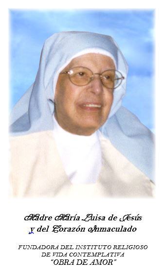

Conoce la trayectoria terrenal de la Madre María Luisa de Jesús y del Corazón Inmaculado, su doctrina escrita sobre el abandono espiritual y las oraciones de su Novena.

Nacida en Huelva (Zalamea la Real) en 1929. Ingresó joven en la vida monástica. Tras salir de la clausura original por severos problemas de salud y sufrir pruebas espirituales profundas de desierto, dedicó cuarenta años de dolor y oración solitaria a asentar las bases de la Obra de Amor.
En los años noventa vio fructificar su perseverancia al surgir las primeras vocaciones estables, lo que culminó con el reconocimiento diocesano de la nueva orden contemplativa en 1999.
Víctima de una leucemia aguda, falleció con gozo en Cáceres en 2002. Su legado gira en torno a la docilidad al Espíritu Santo y el abandono incondicional en brazos de María Santísima.
«Cuando nos acercamos al Sagrario parece como si dos brazos inmensos nos cogieran dentro. Como si dos alas maternas nos cubrieran de los pies a la cabeza. Como si dos fortísimas murallas nos defendieran de todas las flechas.»
«Navega en el Mar de Dios a ojos cerrados. Húndete en Él. En ese Eterno Presente que está en tu alma. Serás muy feliz si aprendes a vivir en esta navegación divina y sabes permanecer sereno.»
«La Virgen. Ella es la Guardiana de los Secretos de la Trinidad. La Abandonada a las iniciativas divinas. La Silenciosa Morenita que sabía esperar las intervenciones de Dios.»
Oración privada recomendada para pedir la intercesión de la Fundadora.
«Santísima Trinidad: Padre Omnipotente, Jesús, Verbo Encarnado, Espíritu Santo, Eterna Luz, que por tu gran misericordia has querido dejarnos por medio de la Madre María Luisa de Jesús y del Corazón Inmaculado un modelo de fe inquebrantable y de abandono total, y un mensaje de amor, de llama y de una fidelidad absoluta; haz que el ejemplo de sus virtudes nos impulse a una vida de mayor entrega a Ti.»
«Dígnate, si es tu voluntad, hacer brillar en la Iglesia su vida heroica, y concédenos por su intercesión esta gracia que ardientemente te suplicamos. Amén.»
(Rezar Padrenuestro, Ave María y Gloria)

Novena autorizada para la devoción y rezo privado.